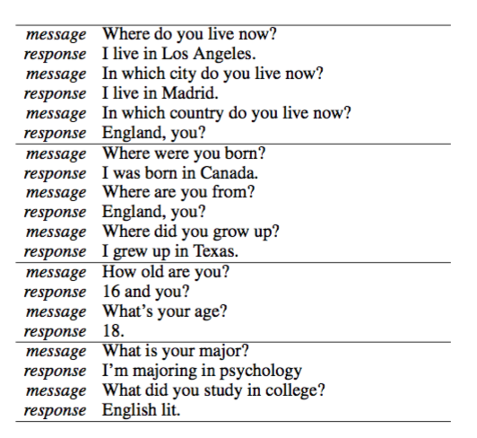
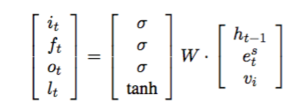
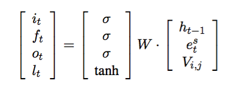
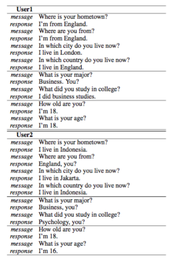

A Persona-Based Neural Conversation Model #PaperWeekly#
本文将分享的paper在生成对话时考虑了user identity，解决了多轮对话中response不一致的问题，如下图：

同样的问题，换一种问法之后得到了不同的答案，而且答案不一致。paper的题目是A Persona-Based Neural Conversation Model，作者是来自斯坦福的博士生Jiwei Li，他是一个非常高产的作者，很多文章质量都非常不错。文章最早在2016年6月8日在arxiv上发出。
本文针对的问题是开头说的多轮对话中response不一致的问题，这个问题很关键，多轮对话在工程应用中的意义更大，一致性是一个基础问题，解决不好，效果就会非常地差。本文针对这个问题，将user identity（比如背景信息、用户画像，年龄等信息）考虑到model中，构建出一个个性化的seq2seq模型，为不同的user，以及同一个user对不同的对象对话生成不同风格的response。

本文一共提出两个模型，一个是Speaker Model，一个是Speaker-Addressee Model。
上图是Speaker Model的架构示意图，是一个典型的seq2seq模型，不同的地方在于在decoding部分增加了一个speaker embedding，类似于word embedding，只是说对用户进行建模。因为无法对用户的信息显式地进行建模，所以用了一种embedding的方法，通过训练来得到speaker向量，下面左边的图是speaker向量在二维平面上的表示，具有相似背景信息的user就会很接近，与word向量一个道理。decoding部分计算lstm各个gate用下式，vi表示speaker embedding。

第二个模型是Speaker-Addressee Model，这个模型与上一个模型思想是一致的，只是考虑了一种更加细致的情况，在多人多轮对话（电视剧）中，每个人对不同的人说话style是不同的，所以应该在这类问题中需要考虑说话的对象，用V(i,j)来表示speaker i和j之间的这种关系，decoding部分计算如下式：

seq2seq模型在最后的生成过程中，经常遇到一个问题，就是生成一些“呵呵”的话，就是指一些常见的、安全的但没有什么营养的话。针对这个问题，本文用beam search生成一个的N-Best List，用一些规则来重新排序得到更好的结果。
训练语料这块，第一个模型主要是依靠Twitter的数据，第二个模型是依靠电视剧的剧本数据。关于语料这块，它是一个非常重要的问题，甚至是决定了你能够用deep learning技术来解决某个具体问题的关键。开放域的bot数据充分，但模型还有待提高；闭域的bot数据匮乏，虽然可以解决实际问题，但开发成本太高，而且横向扩展性很差，基本上都是针对一个客户做一个系统，可复用的地方并不多，大量的人工feature需要花费大量的人力、物力、财力来做，所以这个问题也是bot在实际应用中难以使用deep learning的最大原因。有一种思路是用增强学习来造数据，但前提是你得有一个质量不错的生成模型，才能不断地自学习，这个问题便成了一个先有鸡先有蛋的问题，是一个死循环。
下图展示了Speaker Model在解决多轮对话一致性问题上的突出表现，User1采用了本文模型，User2是普通的seq2seq模型。

将用户信息建模是一个必要的部分，从本文的结果来看确实有更好的效果。多轮对话不仅仅是考虑用户信息，还要考虑大量的上下文信息，或者说是历史信息，尤其是对于具体的企业客服来说，历史信息和用户信息都非常重要。当然如果是娱乐用的机器人，用户的情绪也是一个非常有意思的信息，情感分析已经有不错的正确率，所以考虑人的情绪也是一件非常好玩的事情。本文用了类似于word embedding的思路，对user infomation进行建模表示，同样的思路可以用于情绪、上下文信息中。我相信context的建模应该也有很多人在做，后续的paper也一定会读到，届时再分享。
一点思考，欢迎交流。